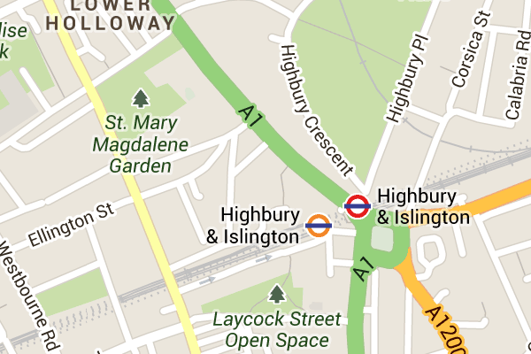
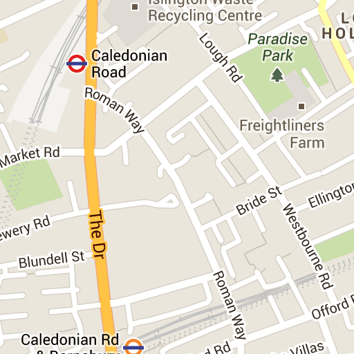
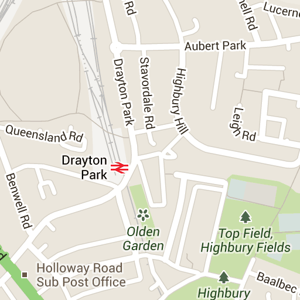
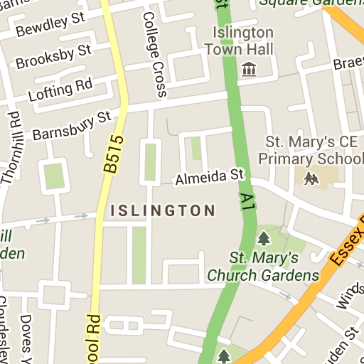
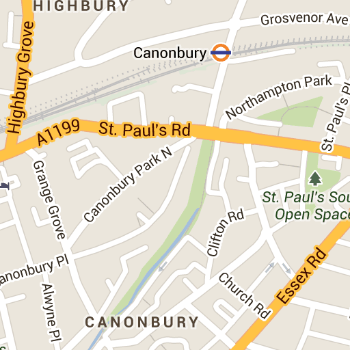
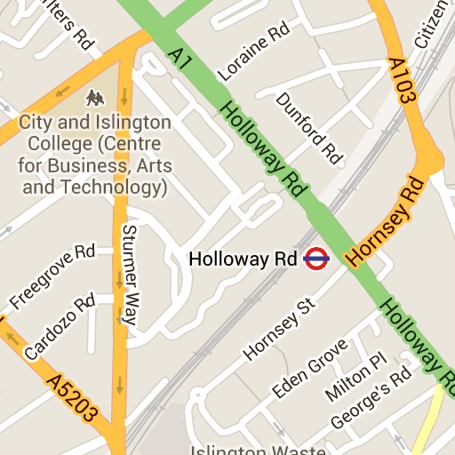
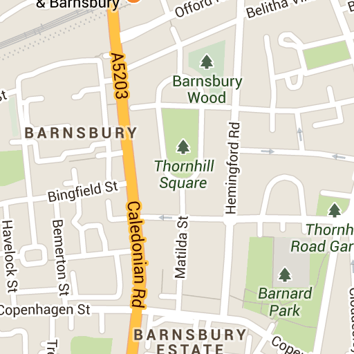
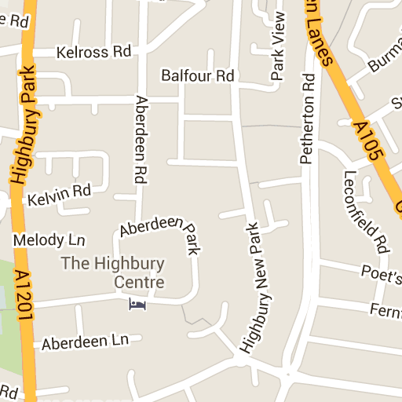
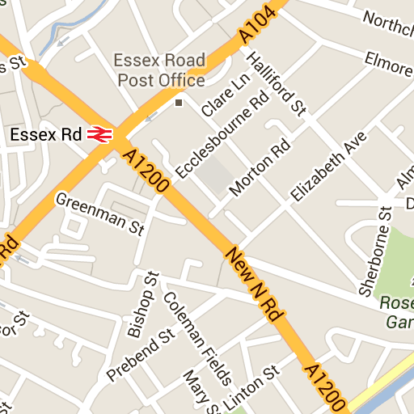

Highbury Corner Magistrates' Court
Address
51 Holloway Road
N7 8JA
DX 153700 Highbury 4
View full court details
Areas of law covered
Civil
criminal
youth court









Map Data
Map data ©2013 Google
-
Terms of Use
Map Data
Map data ©2013 Google
Map data ©2013 Google
Report a map error
Map
Terrain
Satellite
45°
Labels